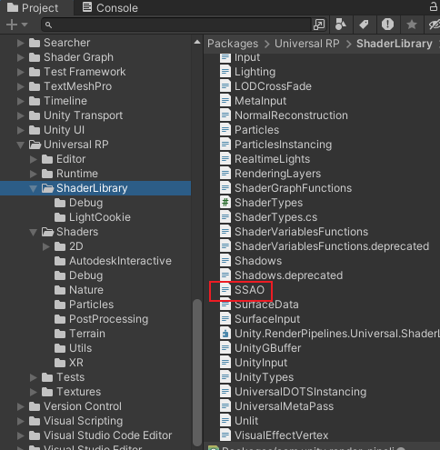

12. 渲染管线
4.Screen Space Ambient Occlusion屏幕空间环境光遮蔽
1.执行逻辑
2.1.对每个物体执行获取深度和法线图存到_CameraNormalsTexture里面
2.2.调用ScreenSpaceAmbientOcclusion这个Shader,然后引用了SSAO.hlsl文件当中的SSAO片段函数(346行)进行计算,得到贴图_SSAO_OcclusionTexture0(SSAO贴图0)
2.3.调用ScreenSpaceAmbientOcclusion这个Shader,引用SSAO.hlsl当中的HorizontalBlur片段函数(499-506行)来计算,进行水平模糊处理,得到贴图_SSAO_OcclusionTexture1(SSAO贴图1)
2.4.调用ScreenSpaceAmbientOcclusion这个Shader,引用SSAO.hlsl当中的VerticalBlur片段函数(508-515行)来计算,进行水平模糊处理,得到贴图_SSAO_OcclusionTexture2(SSAO贴图2)
2.5.调用ScreenSpaceAmbientOcclusion这个Shader,引用SSAO.hlsl当中的FinalBlur片段函数(517-524行)来计算,进行水平模糊处理,得到贴图_SSAO_OcclusionTexture(SSAO最终贴图)
2.6.重新读取附加贴图,释放内存(回到原本正常流程),清空我们设置值的所有颜色,模板值和深度值
2.7.正式绘制过程中,我们的贴图就被参数_ScreenSpaceOcclusionTexture引用进行计算了
相关资源位置

参数设置